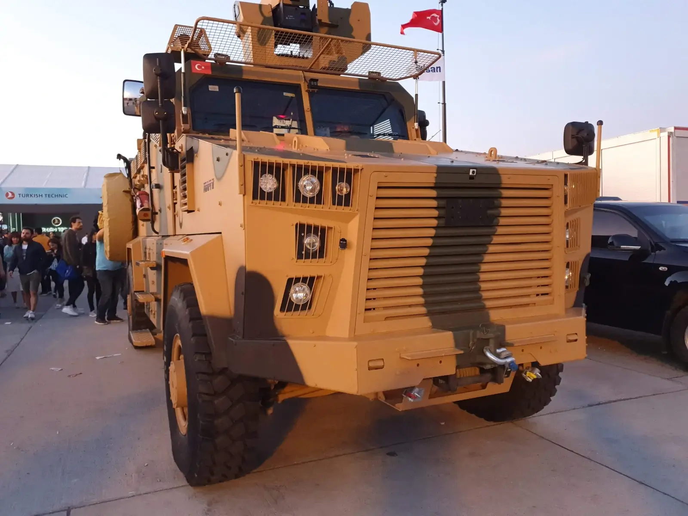
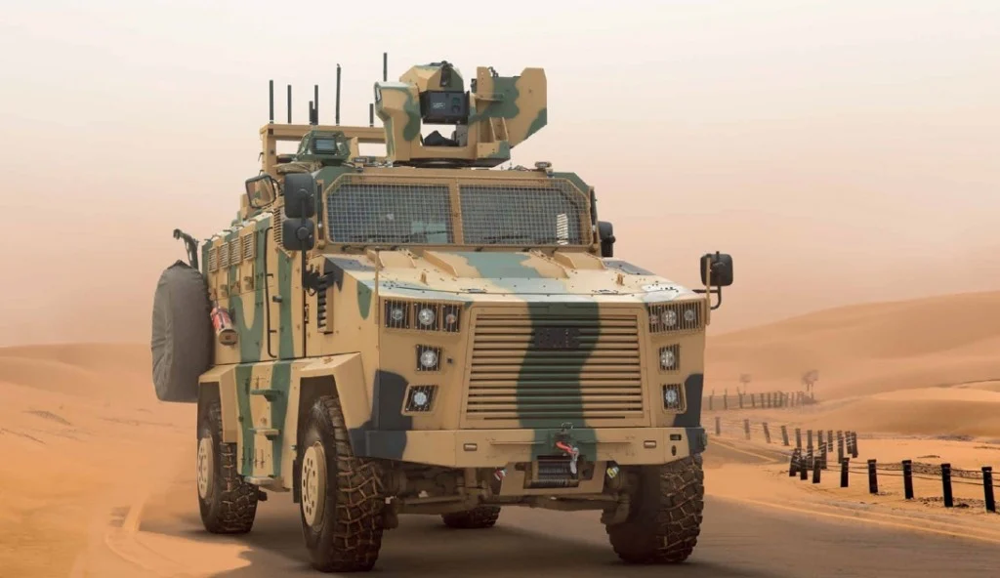
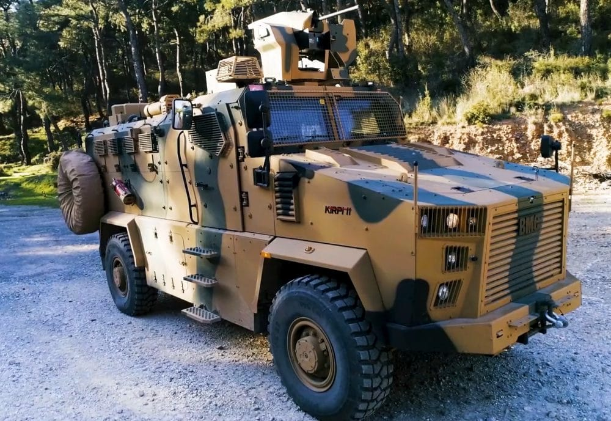

❮
❯
KİRPİ II, BMC tarafından geliştirilen ve KİRPİ ailesinin geliştirilmiş ikinci nesil 4x4 mayına dayanıklı zırhlı aracıdır. Araç, özellikle personel güvenliğini önceleyen kapsül tipi zırhlı gövde yapısı ve yüksek koruma yaklaşımı ile öne çıkar.
BMC’nin ürün tanıtımında KİRPİ II 4x4; farklı ihtiyaçlara yönelik silah sistemi entegrasyonu, 13 kişilik taşıma kapasitesi, bağımsız süspansiyon sistemi ve özel kapsül tasarımı ile yüksek koruma sağlayan bir platform olarak tanımlanır.
Şirketin 2024 tarihli açıklamasında araçta bağımsız süspansiyon, monokok tip zırhlı kabin, özel zırhlı camlar, şok emici koltuklar, silah istasyonu, acil çıkış kapağı ve görev odaklı birçok ekipmanın bulunduğu da vurgulanmıştır.


